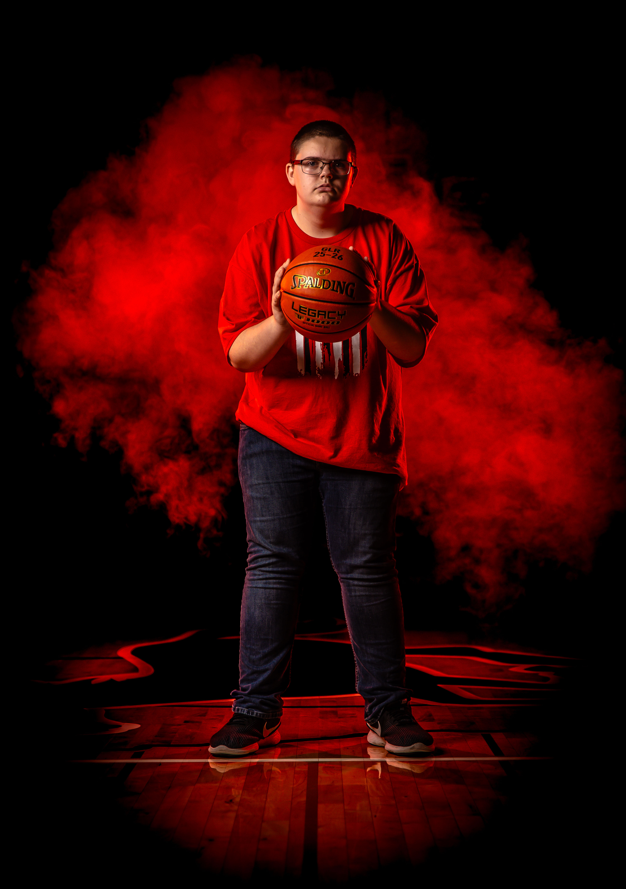

Behind-the-scenes sports management for basketball and baseball programs. Focused on game-day execution, organization, and supporting team operations.
Games
Years
Reliability
Effort
Equipment setup, bench organization, and pre-game structure.
Water, subs tracking, stat recording, and real-time support.
Helping staff stay focused on strategy, not logistics.
Cleanup, data notes, and preparing for the next matchup.
High-impact support presence within varsity basketball and baseball programs. Operates as a behind-the-scenes control layer for game-day execution.
Strengths include rapid equipment coordination, real-time stat tracking, bench organization, and maintaining operational flow under pressure environments.
Verdict: Reliable system asset — consistent performance across all game conditions.